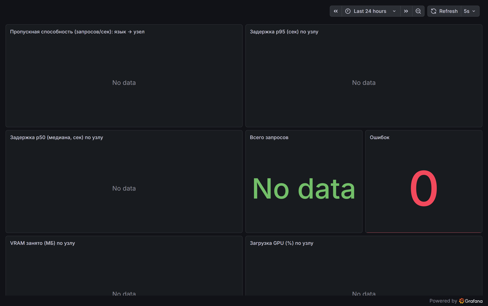

ollama-4060ollama-1660s
| Сервис | Площадка | Порт | Назначение |
|---|---|---|---|
| LiteLLM Gateway | Дом | 4000 | Маршрутизация/балансировка LLM между GPU-узлами, failover, A/B |
| Ollama · RTX 4060 / GTX 1660S | Дом | 11434 | Qwen2.5-7B / Qwen2.5-3B (LLM-инференс) |
| Grafana / Prometheus | Дом | 3000 / 9090 | Мониторинг распределения, латентности, GPU/VRAM |
| ASR «Поток» | Прод | 9447 | Распознавание русской речи для диктовки |
| vertex-proxy | GCP VM | 8788 | Прокси к Gemini Flash (Vertex AI), облачный fallback |
| transcribe-api | Cloud Run | 443 | Облачная расшифровка аудио (Gemini Flash) |
| Hermes · BillionMail · VPN · RustDesk | GCP VM | — | LLM-агент, email-маркетинг, VPN, relay |
| Zoom-планировщик / sheet2zoom | Cloud Run | 443 | Автоматизация Zoom (Firestore, cron) |
| Paperclip | Локально | 3100 | Оркестратор AI-агентов (Postgres), трекинг токенов |